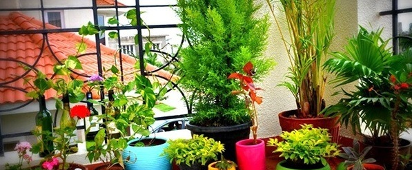
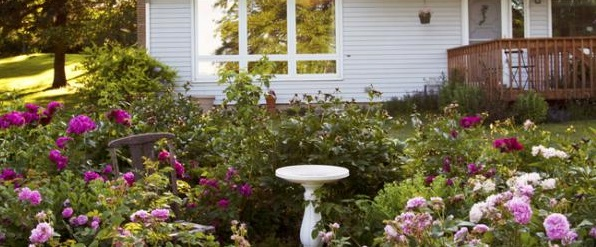

هي عملية إنتاج الغذاء ، او العلف والألياف وسلع أخرى عن طريق التربية النظامية للنبات والحيوان. كلمة زراعة تأتي من "زَرَعَ" الحبً زرْعاً أي بَذَرهُ، وحرَثَ الأرض للزراعة أي هيئهَا لبذَر الحبً. قديماً زراعة كانت تعني "علْمُ فلاحة الأراضي" فقط ولكن كلمة زراعة الآن تغطي كما سبق الذكر كل الأنشطة الأساسية لإنتاج الغذاء والعلف والألياف، شاملة في ذلك كل التقنيات المطلوبة لتربية ومعالجة الماشية والدواجن.
المصطلح الاتيني Agricultura Agri من الكلمة الاتينية ager (أي حقل)، وcultura تعني "حراثَة" بمعنى "حراثَة التربة أو الأرض للزراعة".
وكما سبق القول فإنَّ زراعة تعني علم الزراعة. وتاريخ الزراعة مرتبط ارتباطاً وثيقاً بتاريخ الإنسان، وكانت التطورات الزراعية عوامل شديدة الأهمية في التغير الاجتماعي وذلك يتضمن التخصص في النشاط الإنساني.
اثنان وأربعون في المائة من العاملين في العالم يشتغلون في مجال الزراعة، جاعلين الزراعة أكثر الوظائف شيوعاً بلا استثناء!.الزراعة تشير إلى مجال واسع من أعمال الإنتاج الزراعية،
مغُطية طيف كبير من قياسات العمل(مساحة أرض، مخرُجات إنتاج، الخ...)، ممارسات
والاتجاه التجارى. على طرف من هذا الطيف، هناك المزارع العيشى الذي يزرع مساحة
صغيرة من الأرض بمدخلات موارد محدودة، وينتج غذاء يكفيه هو وعائلته فقط.على الطرف الآخر من هذا الطيف هناك الزراعة التجارية المكثفة، والتي تشمل
الزراعة الصناعية. وهذه الزراعة تتضمن حقول كبيرة وأعداد من الحيوانات، مدخلات
موارد كبيرة(مبيدات، أسمدة، الخ...)، ومستوى عال من الميكنة. هذه العمليات عامة
تحاول أن تعظم الدخل المالى من المحاصيل والماشية والدواجن.الزراعة الحديثة تمتد إلى حدود أبعد من الطرق التقليدية لإنتاج غذاء الأنسان
وعلف الحيوان. السلع الزراعية المنتجة الأخرى تتضمن زهور القطف، نباتات الزينة
ونباتات المشاتل، الأخشاب، الأسمدة، الجلود المستخدمة في صناعة المنتجات
الجلدية، كيماويات صناعية(النشا، السكر، إيثانول، كحولات، اللدائن)،
الألياف(القطن، الصوف، القنب، الكتان)،الوقود(الميثان من الكتلة الحيوية،
الوقود الحيوى) والعقاقير القانونية والغير قانونية(المستحضرات الصيدلية
الحيوية، التبغ، الأفيون،الكوكايين، القنب الهندي).شهد القرن العشرون تغييرات ضخمة في الممارسات الزراعية، خصوصاً في مجال
الكيمياء الزراعية. الكيمياء الزراعية تتضمن تطبيقات الأسمدة الكيميائية،
المبيدات الحشرية الكيميائية(راجع مكافحة الآفات)، المبيدات الفطرية الكيميائية،
تركيب التربة، تحليل المنتجات الزراعية، والاحتياجات الغذائية لحيوانات المزرعة.
بداية من العالم الغربى، الثورة الخضراء قامت بنشر الكثير من هذه التغييرات إلى
المزارع حول العالم، بنسب نجاح مختلفة.من التغييرات الحديثة في الزراعة: الزراعة بدون تربة، تربية النبات، التهجين،
المعالجة الوراثية، إدارة أفضل لمغذيات التربة، ومكافحة حشائش محسُنة. لقد
أنتجت لنا الهندسة الوراثية محاصيل لها سمات تفوق النباتات الموجودة طبيعياً،
كالحاصلات الأكبر ومقاومة الأمراض. البذور المعُدلة تنبتَ أسرع، وذلك يمكننا من
تنميتها في مساحة نمو ممتدة. الهندسة الوراثية للنباتات موضوع مثير للجدل خصوصاً
في حالة النباتات المقاومة لمبيدات الحشائش.يقوم المهندسون الزراعيون بتطوير خطط للرى، الصرف، الصيانة والهندسة الصحية،
وذلك يكون ذو أهمية شديدة في المناطق الجافة عادة والتي تحتاج لرى مستمر، وأيضاً
في المزارع الكبيرة.التعبئة، المعالجة، وتسويق المنتجات الزراعية هي أنشطة مرتبطة ارتباطاً
وثيقاً بالعلم. طرق التجميد السريع والتجفيف قامت بتوسيع السوق للمنتجات
المزرعية(راجع حفظ الأغذية؛ صناعة تعبئة اللحوم).الحيوانات، شاملة الأحصنة،البغال، الثيران، الجمال، الألبكة، الاما، والكلاب،
كثيرا ما تستخدم هذه الحيوانات في فلاحة الحقول، حصاد المحاصيل ونقل منتجات
المزارع إلى الأسواق. طبائع الحيوان تعنى تربية وإنماء الحيوان من أجل اللحم أو
من أجل جنى المنتجات الحيوانية(كاللبن، البيض أو الصوف) على أسس مستمرة. قامت
الميكنة بزيادة عظيمة في كفاءة وإنتاجية المزارع في الغرب.الطائرات، طائرات
الهليكوبتر، والشاحنات والجرارات يتم استخدامهم جميعا في الزراعة في الغرب لبذر
البذور وعمليات الرش لمكافحة الحشرات والأمراض.
[أقسام الإنتاج الزراعي]
[الإنتاج النباتي/ تحسين المحاصيل]
يتم استئناس النباتات لزيادة المحصول، تحسين مقاومة الأمراض، احتمال الجفاف،
تسهيل الحصاد وتحسين المذاق والقيمة الغذائية والعديد من الميزات الأخرى. كان
أثر الانتخاب الدقيق والتربية على مدى القرون ضخما على ميزات نباتات المحاصيل.
يقوم مرُبوّ النبات باستخدام الصوب وتقنيات عديدة أخرى ليحصلوا على أكبر عدد
ممكن من الأجيال في السنة الواحدة وذلك لتسريع عملية القيام بالتحسينات.
الانتاج الحيوانى
قوم مربوا الحيوانات في السابق على الاستفادة منها كعملة مادية ثابتة و عامل
انتاج ضخم ، وايضاً في عصرنا الحالي كذالك و ايضا يستخدمونها في الاقتناء اذا
كانت الحيوانات خالية من العيوب او انها جميلة في البنية الجسمانية و تعابير
الوجه و تفاصيله و يطلقون عليها " المزايين .
وتعرف الزراعه ايضاً
على انها علم وفن لصناعة وانتاج المحاصيل النباتية والحيوانية التي تنفع
الإنسان. يعتبر تعريف الزراعة علماً حديثاً لأن الزراعة قديما كان ينظر إليها
أنها مجرد عميلة بذر البذور في التربة ثم ترك البذور للنمو تحت الظروف الطبيعية
الى ان يأتي موعد حصادها ليعمل المزارعون على حصادها يتم تصنيف الزراعة العالمية إلى زراعة متقدمة وزراعة متخلفة أوزراعة
تقليدية وزراعة نامية، اما الزراعة المتقدمة هي الزراعة التي يستخدام فيها
أساليب إنتاجية جديدة عصرية مما أدى إلى إشباع رغبات السكان.والزراعة المتخلفة أو التقليدية هي الزراعة التي يتم فيها استخدام عناصر
إنتاجية تقليدية أي قديمة غير متطورة في إنتاج سلع زراعية تقليدية لا تكاد
تشبع رغبات السكان أما الزراعة النامية فهي التي تقع بين الزراعة التقليدية
والمتقدمة، أي تلك الرغبات التقليدية التي بدأت تأخذ بأسباب التقدم عن طريق
استخدام طرق إنتاجية عصرية. تعتبر الزراعة من الانشطة المهمة التي يمارسها الانسان لتوفير الغذاء
والكساء والمأوى له كما توفر بعض الصناعات الاساسية مثل الدهان والمواد الطبية
وتشير الاحصائيات ان عدد العاملين في القطاع الزراعي يفوق عدد العاملين في
القطاع الصناعي تعتبر الزراعة من اقدم المهن التي مارسها الإنسان منذ ما يقارب 11,0000
سنة في منطقة الشرق الأوسط التي اكتشفتها بعض القبائل وتعلمت منها كيفية
زراعة النباتات من البذور، و كيفية رعاية الحيوانات في الأسْر. ولقد تعلم
الناس هذه المهارات قبل حوالي 10,000 سنة، وبدأوا الاعتماد على الزراعة
لتوفير مواد الغذاء
متى حدث التطور في الزراعة
حصل في الدول الصناعية تطور كبير في مجال الزراعة، لكن الدول النامية بقي
سكانها يمارسون الزراعة التقليدية التي كان يمارسها أجدادهم منذ مئات السنين.ان الدول التي يمارس سكانها الزراعة التقليدية لا تستطيع توفير الغذاء
الكافي لها، حيث يصبح توفير الغذاء مع الزيادة في عدد السكان بالامر الصعب
لذلك لابد من الدول الصناعية ان تعمل على توفير الآليات الحديثة التي تعمل
على تطوير الزراعة في الدول النامية لكي يصبح بالإمكان مواجهة نقص الغذاء
بكميات كافية الى تلك الدول النامية و تلافي حدوث المجاعة فيها.
المنتجات الزراعية الرئيسية
أهم المنتجات الزراعية هو الغذاء ، لكن يمكن من توفير منتجات أخرى مثل
الألياف الطبيعية، ونباتات الزينة وكذلك الأشجار.
يتم استخدام بعض المحاصيل الزراعية لإنتاج أعلاف الماشية فقط لتوفير منتجات
الماشية من الناحية التجارية ومن هذه الأعلاف :البرسيم والفصفصة وحشائش كثيرة
أخرى مثل العشبة العصافية، والتيموثية
كما يتم انتاج المنتجات الغذائية من خلال المحاصيل الزراعية، وباقي المنتجات
الغذائية من الحيوانات وخاصة الأبقار والحيوانات الزراعية الأخرى حيث يتم انتاج
خمسة وثمانين محصولا رئيسيًا وتقسم هذه المحاصيل الى خمسة وثمانين مجموعة اما
المجموعة الرئيسية هي الحبوب التي يتم زراعتها في نصف المساحة التي خصصت
للزراعة في انحاء العالم،وأهم أنواع الحبوب هي الشعير، والذرة الشامية، والدخن،
والشوفان، والأرز، والذرة الرفيعة، والقمح
انواع الزراعه
هناك العديد من الانماط التي يمارسها المزارعـون ويمكن تقسيم هـذه
الأنمـاط الى طـرائق حيث يعد المنـاخ من الطـرائق الرئيسيـة مثال : نعمل
على تصنيف أنـواع المــزارع في المناطـق الاستوائيـة انها زراعـة
استوائيةاما الزراعة في المناطق الباردة تسمى الزراعة الممارسة في خط العرض
المتوسط.كما تصنيف معظم الزراعة االتي يتم ممارستها حسب حجم وقيمة السلعة
الزراعية المنتجة لكل وحدة من المساحة. ويطلق على هذا النوع من التصنيف
الزراعة المكثفة أو الزراعة الموسَّعة.كما يمكن ان نصنف أنواع الزراعة حسب الغرض منها إلى زراعة تجارية وزراعة
إعاشية
الملخص
تكمن اهمية الزراعةبامداد المجتمع باحتياجاته من الغذاء مع الازدياد
المستمر في الاعداد وتوفير فرص العمل و رؤوس الاموال التي تستخدم فى انشاء
العديد من المشروعات
ومن اهم اوجه الزراعه وانعكاسها علي حياه الانسان النفسيه بالايجاب
الزراعه المنزليه
.تبرز أهمية الحديقة المنزلية Home Garden سواء في المدينة أو الريف أو البادية في أنها قد تشكل احدى أهم مصادر دخل الأسرة حيث تساهم بدرجة كبيرة في زيادة الدخل اذا ما تم استغلالها بطريقة مثالية وصحيحة. ومن اهم فوائد الحديقة اضفاء المظهر الجمالي والحضاري وابراز فن المنزل وزيادته جمالا وبهجة. كما يمكن استخدام بعض انواع ازهار القطف المزروعة في الحديقة المنزلية في عمل باقات الزهور وضمم الورد المختلفة.
تعتبر الحديقة المنزلية المكان المناسب للراحة بعيدا عن الضوضاء وعناء العمل، والمكان الأمثل لممارسة الهوايات كما أن جزءا من الحديقة المنزلية يمكن ان يخصص للاطفال، وزراعة الخضروات، وأشجار الفاكهة، وأزهار القطف.

الحديقة المنزلية سواء في المدينة او الريف تعمل على تزيين المسكن، وهي عادة صغيرة المساحة في المدينة لارتفاع اثمان الاراضي، وعلى العكس تماما فانها تكون ذات مساحة اكبر في الريف. وعادة ما يتسم طراز الحديقة Garden style المنزلية في المدينة بكونه هندسيا، ليتناسب ومعمارية المدينة وشوارعها، بينما يكون الطراز طبيعيا في الريف لوقوع المنزل بين احضان الطبيعة. كما يختلف اختيار النباتات في الحديقة المنزلية في المدينة قليلا عن ذلك الذي في الحديقة الريفية، ولصعوبة التفريق بين اقسام الحديقة المنزلية في المدينة وفي الريف، ولتعدد اوجه التشابه التي تشمل: ماذا يراعى في تصميم الحديقة؟ وعزل الحديقة، وسيادة المنزل، والمنشآت في الحديقة المنزلية، واماكن الجلوس، واماكن لعب الاطفال فان معظم ما يرد في الوحدة الثانية (اقسام الحديقة المنزلية) ينطبق تماما على الحديقة المنزلية في المدينة وفي الريف ما لم يتم التنويه عنه في حينه.
الحديقة المنزلية سواء في المدينة او الريف تعمل على تزيين المسكن، وهي عادة صغيرة المساحة في المدينة لارتفاع اثمان الاراضي، وعلى العكس تماما فانها تكون ذات مساحة اكبر في الريف. وعادة ما يتسم طراز الحديقة Garden style المنزلية في المدينة بكونه هندسيا، ليتناسب ومعمارية المدينة وشوارعها، بينما يكون الطراز طبيعيا في الريف لوقوع المنزل بين احضان الطبيعة. كما يختلف اختيار النباتات في الحديقة المنزلية في المدينة قليلا عن ذلك الذي في الحديقة الريفية، ولصعوبة التفريق بين اقسام الحديقة المنزلية في المدينة وفي الريف، ولتعدد اوجه التشابه التي تشمل: ماذا يراعى في تصميم الحديقة؟ وعزل الحديقة، وسيادة المنزل، والمنشآت في الحديقة المنزلية، واماكن الجلوس، واماكن لعب الاطفال فان معظم ما يرد في الوحدة الثانية (اقسام الحديقة المنزلية) ينطبق تماما على الحديقة المنزلية في المدينة وفي الريف ما لم يتم التنويه عنه في حينه..
وتتغير القيمة النسبية لهذه الاعتبارات باختلاف خلفية اصحاب الحديقة او اهدافهم. فبينما يرغب بعض الافراد بالجمال فقط في حدائقهم بحيث يمكن مشاهدته والاستمتاع به بالنظر من خلال غرفة المعيشة، الا ان افرادا اخرين يرغبون بالاستفادة العملية من الحديقة عن طريق التوسع في المسطحات الخضراء او لممارسة, وتخصيص مساحة لقضاء السهرات في الصيف، وتخصيص حديقة للخضروات واشجار الفاكهة واماكن لعب للاطفال. من ناحية اخرى يمكن لتنسيق الحديقة ان يضيف بهجة ونضرة خلال فصول السنة الاربعة، وذلك باستخدام الشجيرات والابصال المزهرة في الربيع، والحوليات الصيفية والشتوية والشجيرات المزهرة في الخريف..
يمكن التحكم بالاشكال والمساحات المخصصة لكل قسم من اقسام الحديقة بالزيادة والنقصان قبل البدء بالتنفيذ بحيث يتم الوصول في نهاية الامر الى مخطط معين. وتعتمد مساحة كل قسم من الاقسام على الغرض من استخدامه. وفي معظم الحالات نجد انه يفضل تقسيم قطعة الارض المخصصة للحديقة الى ثلاثة اجزاء رئيسة هي:
- المنطقة العامة (او ما يقصد به الحديقة الامامية)
- منطقة المعيشة (او ما يقصد به الحديقة الخلفية)
- منطقة الخدمات
اهميه الحدائق المنزليه

- تزرع الحدائق المنزلية لتجميل ما يحيط بالمنزل،
- ولتكون ملجأ للطيور،
- كما تزرع الاشجار لحماية المنزل من الرياح وتوفير الظل،
- وتعمل الحديقة المنزلية التي تنسق بطريقة صحيحة وجميلة على توفير الراحة لجميع افراد الاسرة.
تكامل هندسة المنزل معماريا وهندسة تنسيق الحديقة:
يعتبر تنسيق الحدائق ذا طابع وظيفي للمنزل، بمعنى انه يضيف شيئا ما. ولذلك يجب اعتباره مكملا لبناء المنزل، وعادة يتم الاعداد لتنسيق الحديقة في الوقت الذي يصمم فيه المنزل بحيث يبرز تنسيق الحديقة فن معمارية المنزل.
القيمة العقارية والمعنوية للمنزل قبل تنسيق الحديقة وبعد ذلك:
ان قيمة اي عقار من ناحية مادية او معنوية وعلى الاخص اذا كان منزلا تقل كثيرا اذا لم تكن حديقته منسقة. وعلى العكس تماما فان العقار ستزيد قيمته اذا كانت الحديقة منسقة وهذا بحد ذاته يعتبر مكسبا للاسرة.
وصف لاماكن الراحة ولعب الاطفال:
يخصص عادة جزء من الحديقة المنزلية اماكن للعب ولهو الاطفال تتميز ببعدها عن الشارع العام، ووجود احواض من الرمل مظللة بالاشجار، او احدى المنشآت لحمايتهم من وهج الشمس، وغالبا ما يكون موقعا في الحديقة الخلفية من المنزل، وتهدف هذه الحديقة الى ما يلي:
1-سلامه الاطفال :
يخصص عادة جزء من حديقة المنزل الخلفية للعب الاطفال بعيدا عن الشارع حيث يمضي اطفالنا معظم اوقاتهم في تلك الحديقة بدلا من الخروج الى الشارع وما قد يتبع ذلك من مشاكل.
2- ممارسه الهوايات :
يمكن اعتبار الحديقة المنزلية مكانا مناسبا للعمل وممارسة الهوايات المختلفة بما يتناسب وقدرات جميع افراد الاسرة. ( تقليم الاشجار والشجيرات، تهذيب الاسيجة، حش المسطحات الخضراء، مقاومة الافات، تحضير التربة واحواض الازهار، قطف الازهار وعمل باقات الزهور، ترتيب المزهريات داخل المنزل ، كل هذه قد تعتبر هوايات واعمال مناسبة لافراد الاسرة بكافة اعمارهم واجناسهم).
3-الراحة بعد عناء العمل:
لقد ثبت ان العديد ممن يعملون في حدائقهم المنزلية يقومون بذلك لان العمل في الحديقة يضفي عليهم شعورا بالراحة النفسية والطمانينة. اذ يعمل النظر الى نباتات وازهار الحديقة المنزلية على خفض ضغط الدم عند الانسان، كما وتزداد فوائد العمل في الحديقة المنزلية كطريقة لمعالجة الكآبة والجهد العاطفي يوما بعد يوم. وتظهر اهمية ذلك في ان علماء البستنة في المؤسسات المختلفة يتعاونون مع المراكز الطبية في اماكن متعددة حيث حققوا نجاحا منقطع النظير في تخفيف بعض مشاكل المصابين بالامراض النفسية.
4- ترابط افراد الاسرة :
يؤدي وجود افراد الاسرة جميعا في الحديقة المنزلية والعمل معا للحفاظ عليها نضرة يانعة في اغلب ايام السنة واداء المهام المنوطة بهم وقضاء ايام العطل على زيادة الترابط بين افراد الاسرة، كما ويزيد تجمع الاقارب في الحديقة المنزلية وبمناسبات عديدة من التقارب فيما بينهم.
إن هذا الموقع يقدم خدمة رائعه من حيث تنسيق النباتات داخل المنزل بشكل رائع حيث اختيار اماكنها من حيث المساحه وموقع كل نبته فان فريق العمل اكثر من رائع ويرشدك كيفيه الاعتناء بها
زائر مستجد
ان هذا الموقع اكثر من رائع انه يقدم نباتات هائله ونادره ويعلمك كيفيه الاعتناء بها ورعايتها
زائر قديم
ان فريق عمل هذا الموقع جميل جدا في عمله ويقدم اغرب النباتات والاشجار والورود واكثرها شيوعا ويعلمك كيفيه تسميدها ورعايتها